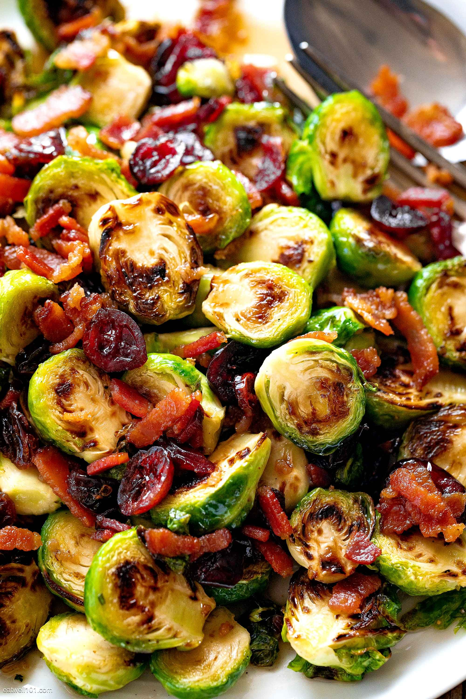

Stir Fry

Roasted Brussel Sprouts
Ingredients
- 1 (16 ounce) package Brussels sprouts, trimmed and halved
- 2 tablespoons olive oil
- 1 teaspoon garlic powder
- 1 teaspoon ground black pepper
- ½ teaspoon salt
- 1 tablespoon balsamic vinegar
- ¼ cup grated Parmesan cheese
- 1 pinch red pepper flakes, or to taste
Steps
- Preheat the oven to 400 degrees F (200 degrees C).
- Toss Brussels sprouts with olive oil, garlic powder, black pepper, and salt in a large bowl. Spread evenly in a 9x13-inch baking pan.
- Roast in the preheated oven, shaking every 5 minutes, until crispy and fork-tender, about 20 minutes.
- Stir balsamic vinegar into sprouts, then sprinkle with Parmesan. Continue roasting until cheese is melted, about 1 minute. Sprinkle with red pepper.